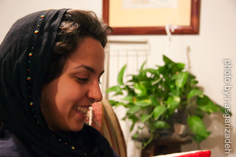

|
|

تجربه بازداشت
فرصت زیستن با زنانی که دیده نمی شوند
گفت و گو الناز انصاری با نفیسه آزاد درباره بازداشتگاه وزرا و تجربه زندگی با زنان زندان
يكشنبه27 بهمن 1387
چند روز از آزادی دوست و همخانه ی من نفیسه آزاد می گذرد. نفیسه 11بهمن حین جمع آوری امضا در توچال تهران بازداشت شد و شش روز بعد با کفالت 50 میلیون تومانی آزاد شد. این روزها نفیسه بارها خاطره روزهای بازداشتگاه وزرا را با ما سهیم شده است. این خاطره ها به تعداد زنگ هایی که در خانه را می نواخت تکرار می شد، ولی هر بار برای من تازگی داشت. شنیدن از زنانی که دور از چشم ما، دور چشم مسئولان، دور از چشم جامعه شناسان و نخبه ها و در سایه بلند برج های قانون بی عدالت می سوزند و بوی خاکسترشان هم حتی به مشام ما نمی رسد. هر کدام که خوش شانس تر باشد خبر اعدام و سنگسارش شنیده می شود. یک از چند هزار نفر می شود آن خوش شانس و دیگران بی هیچ نامی و نشانی دوره می کنند بازداشت گاه و زندان ها و دادگاه ها را.
زندگی چند روزه نفیسه در کنار این آدم ها، داستان های این زنان و بازداشتگاه موقتی در قلب تهران که آلوده و سرد خوابگاه این زنان است، حکایت تازه ای است از یک کمپین در بند دیگر. نفیسه دانشجوی کارشناسی ارشد جامعه شناسی است و همه آنچه تا به حال خوانده در این چند روز در بازداشتگاهی نه چندان بزرگ رنگ دیگری یافته.
به روال هر بازداشت و آزادی در نظر داشتم گفت و گویی با نفیسه داشته باشم درباره روند پرونده و بودن در کمپین، اما در این چند روز هر دو ما به این نتیجه رسیدیم که روند پرونده چیز تازه ای هم اگر داشته باشد می تواند در حاشیه یک متن گفته شود. متن بازداشتگاهی است که شنیدن از شش روز آن و زنان آن حرف تازه ای دارد. تازه اما تلخ. تازه اما به کهنگی زخم های تن مهمانان هر روزه اش. گفت و گوی ما را بخوانید:

برای اینکه همگام با تو وارد بازداشتگاه وزرا شویم، توضیح بده چطور دستگیر شدی و تا آزادی، پرونده ات چه روندی طی کرد که باعث شد چند روز در وزرا بمانی؟
بازداشت من در پی بازداشت یکی از داوطلبان جدید کمپین رخ داد. یعنی پلیس من را دستگیر نکرده بود. زمانی که پلیس بیگرد ابراهیمی را بازداشت کرد من از بالای کوه خودم را به پایین رسانده بودم و اصلا هنوز امضایی هم نگرفته بودم. بیگرد به شدت نگران این اتفاق بود و از من خواست همراهش بروم. پلیس هم کاری به من نداشت و تا زمانی که استعلام نشده بود تنها بازداشتی بیگرد بود.بعد از اینکه پلیس کوهستان استعلام کرد، من و یکی دیگر از داوطلبان جدبد که برای کمک به بیگرد آمده بود را نگه داشتند تا فرمانده پلیس امنیت شمیرانات آمد و ما را تحویل گرفت. ما را بردند پلیس امنیت و همان جا بازجویی کوتاهی از ما شد و ما را بعد از آن تحویل وزرا دادند. فردای آن روز در وزرا بازجویی شدیم و از آنجا رفتیم دادگاه انقلاب. دادگاه هم برای آن دو نفر قرار کفالت و برای من قرار بازداشت موقت صادر کرد. آن روز به وزرا منتقل شدم و تا شش روز هم این قرار بازداشت پابرجا بود تا اینکه با کفالت 50 میلیون تومانی آزاد شدم.
در این چند سال اخیر به خاطر دستگیری های گشت ارشاد، زنان زیادی وارد بازداشتگاه وزرا شده اند و اسم این بازداشتگاه روی زبان ها بود. کمی فضای آن را تشریح می کنی؟
این را بگویم که کسانی که به خاطر حجاب بازداشت می شوند به زیر زمینی که متهمان آنجا نگهداری می شوند منتقل نمی کنند. به ندرت اگر درگیری با ماموران رخ داده باشد یا مثلا کسی که به جرم بدحجابی دستگیر شده مواد مخدر با خود داشته باشد به طبقه پایین فرستاده می شود و دیگران در سالن بزرگی مدتی منتظر می شوند تا تعهدی بدهند و روند کار طی شود . کسی از آنها شب را در آنجا نمی ماند.
“به من گفتند که یکی از دوستانتان را هم دیشب آوردند سلول ما و می گفت که برای تساوی حقوق زنان کار می کند. به گفته آنها عالیه آن شب تا صبح نخوابیده بود و یک پتو دورش گرفته و نشسته بود. بعد من از مسئولان وزرا پرسیدم که این کسی که آورده اند چه کسی بوده که گفتند زن مسنی بود که از شمال آورده بودن اش. بعد از آزادی فهمیدم این شخص عالیه بوده ...”
اما بازداشتگاه وزرا زیر زمین ساختمانی است که برای جرایم منکراتی در نظر گرفته اند. و هیچ راهی برای ورود و تهویه هوا به آن وجود ندارد. تنها منفذ هوا چند پنجره کوچک در توالت است که نرده های مشبکی دارد و انقدر کوچک است که فقط نوک درختان پارک پشت ساختمان وزرا از آن دیده می شود. محل نگهداری متهمان در حقیقت یک راهروی باریک در حدود 24 در دو متر است و در اطراف این راهرو سلول ها قرار گرفته اند. بعضی از این سلول ها انفرادی و کوچک هستند و بعضی بزرگ ترند. سراسر این مجموعه از سنگ است و تهویه وسیستم گرمایشی اینجا هم یک هواساز است که قاعدتا باید هوای گرم به سالن بدهد اما چون این سیستم خراب شده فقط فن دستگاه کار می کند به طوری که وقتی در این راهرو راه می روی احساس می کنی یک کولر پرقدرت روشن است و هوای سرد را با شدت توی بازداشتگاه پخش می کند. وجود این تهویه خنک کننده! و سنگ های مرمر فضا این بازداشتگاه را خیلی سردتر می کند .
خب حالا که این سیستم گرمایشی، وسط زمستان نقش کولر را بازی می کند چرا خاموشش نمی کنند؟
تنها کارکرد مثبت این دستگاه جابجایی هوایی است که انجام می دهد. فکر می کنم اگر این جابجایی هوا هم نباشد همه خفه می شوند. محیط هم آنقدر آلوده هست که اگر هوا راکد بماند کسی از آنجا سالم بیرون نمی آید.
با این وضع بازداشتی ها چطور خودشان را گرم می کنند؟
چیزی که برای پوشش می دهند پتوهای کثیفی است که باید زیر پا و روی تنتان بکشید، چون کف بازداشتگاه هم سنگ است و موکت هم ندارد. کسی که هم فردا می آید همان پتوها را می گیرد و پتویی که دیشب روی زمین بوده روی تنش می کشد و خب راهی هم برای تشخیص اینکه کدام یک تمیزتر است وجود ندارد. بعضی روزها هم که بازداشتگاه شلوغ است پتو هم کم می آید و در این شرایط وسواس بی معنی تر می شود.
هر کسی که وارد این بازداشتگاه می شود میانگین چند روز را با این وضع سر می کند؟
معمولا افراد یک شب را در اینجا می گذرانند تا فردا که دادگاه تکلیفشان را روشن کند. کسانی که بیش از یک روز در آنجا می مانند در حقیقت در دادگاه مشکل خاصی دارند که دادگاه به خاطر آن مشکل، نه حکم آزادی شان را می دهد و نه حکم انتقالشان به زندان را. بخشی از مشکلاتی که این بازداشتگاه دارد به دلیل ماهیت موقت بودنش است. این وضع که هر کسی با هر اتهامی یک شب می آید و صبح هم می رود مانع هر نوع سازماندهی می شود. اما خیلی از مشکلات آن را نمی شود با این بهانه توجیه کرد. در طول مدتی که من در وزرا بودم جز من دختری هم آنجا بود که حدود 17 روز بود در آنجا مانده بود، داشتيم كساني كه سه يا چهار روز هم مي ماندند ولي قانون کلی این است که کسی یک شب بیشتر نماند، اما روند پرونده و اتهام روی مدت ماندن در آنجا تاثیر می گذراد.
یادم هست که در بازداشت 13 اسفند 85 وضع بد دستشویی های وزرا خیلی مطرح می شد. هنوز این دستشویی ها همان وضع را دارند؟
از سه دستشویی موجود فقط یکی از اینها قابل استفاده است. چون یکی آب ندارد و یکی از آنها هم خراب است اما گاهی از همان توالتی که آب هم ندارد استفاده می کردند. از مواد شوینده صابون های جامدی آنجا هست که آنقدر این صابون ها کثیفند که ترجیح می دهی اصلا از آنها استفاده نکنی. برای آب خوردن هم از شیر دستشويي همین توالت ها باید استفاده کنید و لیوانی هم وجود ندارد و باید با دست آب بخوری که اصلا برای شستن آن هم شوینده ی مناسبی وجود ندارد . در آنجا حتی موضوع ساده ای مثل آب خوردن تبدیل به موضوعی بغرنج می شود، حاضری تشنگی را تحمل کنی ولی آب نخوری. در طول روز هم هیچ نوشیدنی مثل چای به زندانیان داده نمی شود. تا جایی که بعضی زندانی ها با داد و فریاد و التماس از مسئولین زندان می خواستند که اجازه بدهند از شیر آبی که پرسنل از آن استفاده می کنند آب بخورند.
وضع بهداشتی سلول ها و راهرو چطور بود؟
در باره نظافت و بهداشت محیط بعضی از شیفت ها حساسیت داشتند و سعی می کردند متهمان را تشویق کنند که آن جا را بشورند. ولی هر شیفت با دیگری فرق داشت. مثلا در یکی از این شیفت ها ما به زور ازشان جارو یا پودر شستشو گرفتیم که می گفتند زیاد مصرف نکنید... مجموعا آن شرایط برای نگهداری بیش از یک شب واقعا آزاردهنده است.
برخورد پرسنل بازداشتگاه با تو چطور بود؟
مسئولان وزرا تقریبا با کمپین آشنا هستند چون بارها از فعالان کمپین بازداشت شده و به آنجا رفته اند. و برخوردهاشان با من خیلی خوب بود ولی عملا آنها هم کار زیادی برای زندانیان نمی توانند انجام دهند. چه درباره ما و چه زنانی که با جرائم عادی بازداشت می شوند. چون امکاناتی هم وجود ندارد. بماند که یک شیفت از این کارکنان واقعا خشن و بی تفاوت بودند.
زندانیانی مثل من خیلی به ندرت به این بازداشتگاه می روند ولی جرائم عادی متهمان زیادی دارند. هر زنی را از هر جای تهران دستگیر کنند به این بازداشتگاه منتقل می کنند. در بین جرایم متفاوتی که وجود دارد زنانی که اعتیاد دارند و به این محل آورده می شوند بیشترین تعداد را دارند. و اکثر این ها بعد از چند ساعت حال خیلی بدی پیدا می کنند. اگر روزهای بازداشت آنها طولانی تر شود که حالشان بدتر هم می شود. این افراد معمولا در ساعات اول مشکل گوارشی پیدا می کنند ولی مسئولان کاری از دستشان بر نمی آید دارویی ندارند که در اختیار آنها بگذارند وبرداشت من این بود که در اثر تکرار ، این وضعیت برایشان عادی شده. البته برای بعضی هایشان هنوز آن شرایط عادی نشده بود و سعی می کردند به زندانیان بد حال کمک کنند. یعنی شاید یک حس مسئولیت و عاطفه فردی بود که بر مبنای آن سعی می کردند کاری انجام دهند.
“ممکن است من مشکل شخصی با این قوانین نداشته باشم و سبک زندگی ام مرا با این قوانین درگیر نکند، ولی من که می دانم قانون مرا از این زاویه نگاه می کند، مرا شهروند درجه دو می داند و این تحقیری است علیه من”
تنها کاری که در باره بعضی بد حالان ممکن است، این است که با اورژانس تماس بگیرند ولی یکی از پرسنل می گفت که هر بار اورژانس می آید می گوید که ما تعداد زیادی بیمار داریم و برای یک معتاد کاری از دستمان بر نمی آید و با ما تماس نگیرید. این تماس ها هم در شرایطی است که حال زندانی خیلی بد باشد. مثلا شب اولی که من آنجا بودم خانمی بود که کراک مصرف می کرد و چنان بد حال بود که بیهوش شد. نبض او انقدر کند می زد که برای لحظاتی فکر کردیم مرده است.
کار در آنجا برای این پرسنل خیلی سخت است خصوصا وقتی امکاناتی هم وجود ندارد و این افراد فقط باید فریاد ها و فحاشی ها را به جان بخرند و کاری هم از دستشان بر نمی آید که انجام دهند. البته رفتار هر یک از چهار شیفتی که هر کدام 24 ساعت در آنجا می مانند هم خیلی متفارت با هم بود. دو شیفت پرسنل بسیار خوبی داشتند که اگر کاری نمی کردند فقط از نبود امکانات آنجا بود وگرنه سعی می کردند لااقل در سلول ها را دیرتر ببندند و یا به بد حالان رسیدگی کنند. اما یکی از این شیفت ها حتی یک سئوال مرا بعد از اینکه دو ساعت صدایشان کردم جواب ندادند. ولی در کل برخوردشان با من خوب بود چون شرایط متفاوتی داشتم ولی بودن من یا امثال من در آنجا استثناست و ساکنان اصلی آنجا زنان دیگری هستند که به هر دلیل هیچ توجهی به آنها نمی شود.
با وجود عدم طبقه بندی زندان ها معمولا شرایط زندانیان امنیتی با عادی تفاوت هایی دارد. درباره تو هم این اختلاف وجود داشت که مثلا جدای از زندانیان دیگر باشی و یا امکان دسترسی به تلفن و امکانات دیگری داشته باشی؟
جدا نبودم و البته از این وضع ناراضی هم نبودم. اما در کل در مورد پرونده های کسانی مثل اعضای کمپین یا جریانات دیگر که اتهام به اصطلاح منکراتی نیست، متهم با عنوان "امانی" تحویل وزرا می شود. یعنی متهم امانت یک نهاد دیگر است. مثلا من امانت پلیس امنیت در وزرا بودم. هر دستوری که آنها به وزرا بدهند باید اجرا شود. در دستوری که به این بازداشتگاه درباره من داده بودند آمده بود که حق تماس تلفنی و ملاقات ندارم. برای همین آنها اختیاری درباره من نداشتند. یعنی من نوعی چند روز با آنها سر و کله می زنم اما آنها مسئول هیچ چیز نیستند جز اینکه مرا تحویل بگیرند و تحویل پلیس امنیت یا نهاد دیگری بدهند. همین هم وضعیت را برای زندانیان "امانی" سخت تر می کند، چون مسئولان بازداشتگاه حتی اگر بخواهند حق استفاده از اختیاراتشان را هم ندارند.
گفتی بسیاری از این زنان که بازداشت می شوند به خاطر مصرف مواد حال بدی دارند. اولین مشکلاتی که برایشان پیش می آید چیست؟
خیلی از آنها بدن درد دارند و وضعیت گوارشی شان بهم می ریزد. از دستشویی ها هم نمی شود به طور دائم استفاده کرد. شب ها بنا بر رای پرسنلی که آنجاست سر ساعت مشخصی در سلول ها بسته می شود و کسی حق خروج از سلول را ندارد. گاهی ساعت 10 این اتفاق می افتد و گاهی تا ساعت 12 امکان استفاده از دستشویی وجود دارد. ولی به هر حال این بازه زمانی برای کسی که به خاطر عدم مصرف مواد مشکل گوارشی دارد زمان طولانی است. در این مدت کم شاهد بودم که دو نفر بعد از مدت طولانی التماس و فریاد برای دستشویی خودشان را در سلول کثیف کردند. واقعا از این نظر بازداشتگاه وزرا نیاز به بازبینی در مقررات و امکانات دارد .
به غیر از مسائلی که اشاره کردی چه مشکل دیگری در آنجا توجه تو را جلب کرد؟
با همه این مشکلاتی که گفتم به نظر من بزرگتر از مشکلات بهداشتی و سرما و ... خدماتی است که از این افراد دریغ می شود.عموم زنانی که به این بازداشتگاه می آیند عمدتا از کسانی هستند که از خدمات اجتماعی در طول زندگی شان محروم بوده اند. یعنی آنچه من در این شش شب دیدم این بود. وقتی این افراد می آیند هیچ چیز نمی دانند و نمی توانند از خودشان دفاع کنند و یا حتی نمی دانند روند پرونده شان چه سیری خواهد داشت. بودند کسانی بودند که برای سومین بار بازداشت شده بودند و به وزرا آمده بودند و حتی نمی دانستند بازداشت موقت یعنی چه.
یعنی هیچ کسی برای راهنمایی و مشاوره حقوقی به این افراد آنجا نبود؟
نه اصلا. من که حقوقدان نیستم و اطلاعات حقوقی ام را در همین دو سال و در کمپین به دست آورده ام و درباره قوانینی که شامل زنان می شود، مثل سن مسئولیت کیفری و حق طلاق و مجازات زنا و سنگسار و ... صحبت می کردم و سعی می کردم راهنمایی شان کنم. چون همه مشکلات آنها به نوعی مربوط به همین قوانینی بود که در کمپین طرح شده . برای آنها هم جالب بود و چون خودشان مصداق این گفته ها بودند خیلی دقیق گوش می کردند.
مثلا یک شب ناراحت کننده من در وزرا شبی بود که با سه دختر 15 ، 16 و 17 ساله در یک اتاق بودم و مدام با خودم فکر می کردم این بچه ها اینجا چه کار می کنند. یکی از این دخترها که 17 سال داشت از خانه شوهرش فرار کرده بود. در 15 سالگی به زور شوهرش داده بودند. مادرش فوت کرده بود و پدرش هم او را به دایی اش سپرده بود و رفته بود. دایی اش به او گفته بود یا شوهر کن و یا از خانه من برو. او هم ازدواج را انتخاب کرده بود. بعد از شش ماه هم شوهرش به خاطر اینکه مواد مصرف می کرد او را از خانه بیرون کرده بود. روزی که بازداشت شد 17 روز بود که به خانه نرفته بود. می گفت من از شوهرم منتفرم و بعد با این استدلال که شوهرم اگر بفهمد من در این مدت رابطه جنسی داشتم من را طلاق می دهد، بدون اینکه در این 17 روز رابطه جنسی داشته باشد اقرار کرده بود با چند نفر رابطه جنسی داشته است. خب این اقراری که کرده عملا اعتراف به زنای محصنه است و می تواند او را تا پای سنگسار هم ببرد. واقعا با یک مشاوره حقوقی ساده که حق این متهمان هم هست سرنوشت این آدم ها می تواند تغییر کند و همین امکان هم برایشان وجود ندارد.
میانگین سنی کسانی که به وزرا می آورند چقدر است؟
در روزهایی که من آنجا بودم به ندرت کسی را می آوردند که از من سن بالاتری داشت. خیلی هایشان واقعا بچه بودند. از 14- 15 ساله بود، تا حداکثر26 ساله. زنان میانسال هم بودند. مثلا خانمی بود حدود چهل ساله که برای چک بازداشت شده بود. ولی من با 30 سال سن خیلی اوقات مسن ترین بازداشتی آنجا بودم.
تو جامعه شناسی خواندی و آسیب های اجتماعی هم بخش عمده ای از این رشته است. با این ذهنیت آکادمیک از بودن در کنار قربانیان این آسیب ها چه حسی داشتی؟
من در وزرا با یک قشر اجتماعی زندگی کردم که شاید در زندگی عادی ممکن بود ببینم شان، اما فرصت زندگی با آنها را جز در اینجا پیدا نمی کردم. به من در بازجویی گفته شد که برای شکنجه شما همین بس که برید با زنان بدکاره و ... یک جا بمانید. ولی برای من این طور نبود. انقدر که من از اینها یاد گرفتم، سبک زندگی شان، ادبیات شان، اتفاقاتی که برایشان می افتد و ... در دانشگاه یاد نگرفتم. دیدن آنها و شنیدن داستان هایشان برای من یک امکان ویژه بود.
و از طرف دیگر برای من خیلی جالب بود که با همین آدم ها هم می توانستم از دغدغه هایمان حرف بزنم. برای زنی که دو کلاس بیشتر سواد نداشت از کمپین می گفتم و او هم با من همراه می شد، چون درگیر قوانین طلاق یا سن مسئولیت کیفری بود. یا وقتی داستان هایشان را می شنیدم، از خودشان نمونه می آوردم که اگر قانون ما عادلانه تر بود تو را نمی توانستند در 15 سالگی به زور به عقد کسی دربیاورند چون قانون از تو حمایت می کرد. یا نکته جالبی که بین خودشان و در حرف های خودشان بارها می شنیدم این بود که می گفتند قاضی مرد است. به هم می گفتند که قاضی مرد است و نمی فهمد، تو که زنی چه می گویی. شاید حقوق نمی دانستند و حتی حق خودشان را نمی دانستند اما این را لمس می کردند که مرد بودن قضات در سرنوشت آنها تاثیر می گذارد. با همین نمونه هایی که برایشان قابل لمس بود کمپین را توضیح می دادم و می گفتم که طبق قانون ما نمی توانیم قاضی زن داشته باشیم و شاید اگر قاضی زن داشتیم دادگاه آنان و شرایطشان را بهتر درک می کرد. به آنها می گفتم که من هم برای همین چیزها امضا جمع می کنم، هر چند آنها کاملا از اصلاح این قوانین ناامید بودند و می گفتنداشتباه می کنی و بیخود خودت را به دردسر می اندازی و ... ولی می دیدم که برای یک حرکت اجتماعی احترام قائل هستند و می شنیدم که به هم می گفتند که این برای ما امضا جمع می کند و برای همین اینجاست. این درک متقابل و آگاهی ناخودآگاه آنها که از وضعیت زندگی شان نشات می گرفت خیلی برایم جالب بود.
با همه اینها یکی از دغدغه های قدیمی فعالان حقوق بشر طبقه بندی زندان هاست. خب اگر بودن در کنار این افراد تا این حد می تواند مفید باشد چه چیز آزادهنده ای وجود دارد که این دغدغه را توجیه کند؟
اتفاق بدی که در این شرایط برای یک زندانی امنیتی می افتد این است که شما بر عکس آنهایی که آنجا هستند ممکن است هر روز بازجویی داشته باشی. باید تمرکز زیادی روی پرونده و بازجویی ها داشته باشی که امکان این تمرکز اصلا در وزرا و بازداشتگاه های این چنینی وجود ندارد. وزرا حتی یک لحظه ساکت نیست. در این روزها فقط یک شب وزرا خالی بود که جز من زن دیگری هم بود و بازداشتگاه ساکت بود. اما سکوت آنجا هم آزاردهنده است به خاطر اینکه در یک فضای، سنگین و سردی در زیرزمین هستی که سنگینی سکوت آن هم آرامش و تمرکز آدم را بهم می ریزد. در شرایط عادی هم یک شلوغی و داد و بیدادی هست که در آن هر لحظه کسی چیز جدیدی می خواهد. یکی آب می خواهد، یکی قرص و یکی سیگار و این صداها و فریادها هیچ وقت تمام نمی شود.
“حتی اگر امروز همین کمپینی های با سابقه هم تصمیم بگیرند کمپین را تمام کنند امکان این وجود ندارد. چون این حرکت بسیار فراگیر شده و قدرتش از دست یک عده خاص خارج شده است و این اتفاق بسیار خوبی در کمپین است”
طبقه بندی زندان ها از جهتی خوب است، چون به هر حال سیستم را وادار به پذیرش و رسمیت دادن به جرم سیاسی می کند، اما تجربه زندگی در کنار زندانیان عادی تجربه ای است که دست کم برای من خیلی مفید بود. نبود طبقه بندی از طرفی باعث می شود با قشری ارتباط بگیری که بیرون از زندان دسترسی به آنها خیلی سخت است.
کمپین و شاید اصلا جنبش زنان همیشه با این اتهام مواجه بوده که شما یک قشر مرفهی هستید که اصلا درد زنان را نمی فهمید. کمپین هم پاسخ خود را به این نقد داده است با این حال این چالش هنوز وجود دارد. آیا زمانی که با این زنان زندگی می کردی به این موضوع فکر می کردی و آیا بین دغدغه های کمپین و سطح زندگی این زنان رابطه ای پیدا کردی؟
جالب است که حتی دربازجویی ها هم چند بار به این موضوع اشاره می شد که مگر تو می خواهی طلاق بگیری که دنبال اصلاح قانون طلاقی یا مگر پدرت کسی را در خانه می زد. همین بازجویی ها هم آدم را وادار می کند که حتی اگر تا به حال به این موضوع فکر نکرده آنجا برای پاسخ به این سئوال ها بیشتر فکر کند.
من این را قبول دارم که شاید عموم کسانی که در کمپین فعال هستند خاستگاه شان متوسط رو به بالای شهری باشد. چون این طبقه وقت کافی دارد که روی دغدغه های اجتماعی اش بگذارد. ولی یک طرف دغدغه ی اجتماعی است و یک طرف تحقیر شدن توسط این همین قوانین است که برای همه ما یکسان است. ممکن است من مشکل شخصی با این قوانین نداشته باشم و سبک زندگی ام مرا با این قوانین درگیر نکند، ولی من که می دانم قانون مرا از این زاویه نگاه می کند، مرا شهروند درجه دو می داند و این تحقیری است علیه من.
اما وقتی می روی و در جاهایی مثل همین وزرا این زنان را می بینی می فهمی که درست است که خاستگاه این جنبش طبقه متوسط است اما نفع مستقیم تغییر این قوانین به دهک پایین زنان جامعه می رسد. کسانی که دچار محرومیت اجتماعی هستند (نه فقط فقر اقتصادی)، دسترسی شان به آموزش و درآمد و منابع دیگر کمتر است، خیلی بیشتر از گروه های دیگر از قانون نابرابر ضربه می خورند تا افراد طبقه بالا و متوسط. این طبقات معمولا با قانون درگیر نمی شوند چون گاهی آن را می خرند، گاهی آن را دور می زنند و یا گاهی از تسهیلاتش استفاده می کنند. اما دهک پایین جامعه این طور نیست. و قدرت چانه زنی با قانون را ندارد و قانون هم دربار ه او سختگیرانه تر اعمال می شود. هیچ یک از این بچه هایی که آمدند وزرا نه وکیل داشتند و نه خانواده ای داشتند که از آنها حمایت کند و اگر هم خانواده ای بود آنها بیشتر از اینکه از دادگاه بترسند از خانواده هایشان می ترسیدند. هیچ حمایتی از آنان نمی شود و برای همین هم قانون درباره آنها به سختگیرانه ترین شکلی اعمال می شود. حال وقتی این قوانین، تبعیض آمیز هم باشند که بدتر. یعنی همین دختر 17 ساله را می بینی که ماه ها زندگی اجباری داشته، فرار کرده و حالا در معرض یک اتهام سنگین مثل زنای محصنه است؛ در حالی که دختران همسن او در طبقه بالاتر هنوز بچه ی خانه محسوب می شوند و درس می خوانند و حتی نمی دانند دختر 13 ساله را پدرش می تواند به عقد کسی درآورد. وقتی این زنان را دیدم، بی آنکه بخواهم شعار دهم فکر می کنم این همان کار درستی است که باید انجام می دادیم. فکر می کنم اگر این قوانین تغییر کند اگر سطح آگاهی زنان از قانون بالاتر برود کار بسیار موثر و بزرگی صورت گرفته.
تو با متهمان زیادی در این چند روز یکجا بودی و همانطور که گفتی با آنها درباره کمپین صحبت کردی. آیا بین این افراد کسی هم بود که کمپین را بشناسد؟
بله. چند زن را یک روز آوردند و آنها تا مرا دیدند گفتند قیافه شما برایمان آشناست و پرسیدند برای چه آنجا هستم جریان را که فهمیدند، گفتند که ما کمپین را می شناسیم و خبرهای دستگیری شما را هم شنیدیم. جز اینها هم مسئولان وزرا بودند که کاملا با کمپین آشنا بودند. همین آشنایی ها حتی اگر سطحی باشد در آن شرایطی که در بی خبری به سر می بری خیلی امید بخش است.
همزمان که تو در زندان بودی عالیه اقدام دوست هم از خانه پدری اش در فومن دستگیر و به زندان اوین منتقل شد. آیا طی بازجویی ها و یا در وزرا متوجه این موضوع شدی؟
من که تا امروز عالیه اقدام دوست را ندیده ام و ایشان را نمی شناسم. اما یک شب که اتفاقا خیلی هم زود درهای سلول را بسته بودند، متوجه شدم که درها را باز کردند و زن مسنی را آوردند و صبح هم قبل از ساعت 7 که درها را برای دستشویی باز می کنند، او را از وزرا بردند و این اتفاق نادری در آنجاست چون تا ساعت 8-9 صبح هیچ کس را برای دادگاه و کارهای دیگر از بازداشتگاه بیرون نمی برند. زمانی که درها را باز کردند این خانم را برده بودند و من ندیدمشان. تا اینکه دیگران به من گفتند که یکی از دوستانتان را هم دیشب آوردند سلول ما و می گفت که برای تساوی حقوق زنان کار می کند. به گفته آنها عالیه آن شب تا صبح نخوابیده بود و یک پتو دورش گرفته و نشسته بود. از مسئولان وزرا پرسیدم که این کسی که آورده بودند چه کسی بوده که گفتند زن مسنی بود که از شمال آورده بودن اش. بعد از آزادی فهمیدم این شخص عالیه بوده و همان صبح هم او را به اوین منتقل کرده اند. من اصلا نمی دانستم که حکم او اجرا شده.
“نگران عالیه هستم. چون ارتباطی با ما نداشت و تماسی هم با ما نگرفته و شاید اصلا نمی داند که عده ای دارند برای آزادی او تلاش می کنند که دلگرمی به آزادی داشته باشد. این حکم خیلی ناعادلانه بود و اجرای آن هم ناعادلانه تر”
وقتی آزاد شدم و این خبر را شنیدم جز اینکه یاد موج برخورد با جنبش زنان در سال گذشته افتادم، بیشتر به وضع عالیه در زندان فکر کردم که حتما به خاطر این بود که تازه از بازداشت درآمده بودم. در زندان همیشه این عطش را داری که خبری از بیرون بگیری، چیزی از کسی دریافت کنی، بفهمی بیرون از تو حمایت می شود، فراموش نشده ای و اینها خیلی دلگرم کننده است که الان این دلگرمی از عالیه دریغ شده است.
خیلی از ما تا امروز طعم زندان را چشیده ایم ولی برای خود من بدترین خاطره ی این چند روز زمانی بود که سربازها در حیاط بازداشتگاه والیبال بازی می کردند و توپ شان گاهی می خورد به در و هربار ما می رفتیم دم در که ببینیم چه خبر است، کسی را آورده اند، از بیرون خبری شده و ... خب ما نمی دانستیم این فقط یک توپ است. می خواهم بگویم در چنین جایی چقدر برای دریافت هر خبر و اتفاق تازه ای همه حواس آدم حساس می شود. این صداها را در حالت عادی شاید حتی نشنوی. برای همین مورد هم نگران عالیه هستم. چون ارتباطی با ما نداشت و تماسی هم با ما نگرفته و شاید اصلا نمی داند که عده ای دارند برای آزادی او تلاش می کنند که دلگرمی به آزادی داشته باشد. این حکم خیلی ناعادلانه بود و اجرای آن هم ناعادلانه تر.
فکر می کنی چرا این برخوردها با جنبش زنان و کمپین صورت می گیرد؟
من آنجا هم به آقایان گفتم که تصورشان درباره کمپین اشتباه است. این تصور که کمپین 10-20 نفر آدم است که اگر این تعداد را زندانی کنند کمپین هم تمام می شود. کمپین واقعا کاری جز جمع آوری امضا و حرف زدن با مردم درباره قوانین تبعیض آمیز ندارد و این کار نه کار یک تعداد محدود است و نه با سرکوب این افراد جریان تمام می شود. نمی شود 200 نفر و 500 نفر را زندانی کرد. این تصور اشتباه است که برنامه ریزی اشتباه را هم به دنبال دارد. فکر می کنم که حتی اگر امروز همین کمپینی های با سابقه هم تصمیم بگیرند کمپین را تمام کنند امکان این وجود ندارد. چون این حرکت بسیار فراگیر شده و قدرتش از دست یک عده خاص خارج شده است و این اتفاق بسیار خوبی در کمپین است.
حالا با وجود اینکه این دستگیری سوم تو بود تصمیم ات برای ادامه کار چیست؟
آخرین سئوالی که من در بازجویی جواب دادم همین سئوال بود. ولی آنچه که پشت هر برخوردی است این که تو در عینیت می بینی این قوانین چقدر تحقیر آمیز و تبعیض آمیز است و هیچ واهمه و ترسی روی این واقعیت را نمی پوشاند. من جوابی که آنجا دادم را اینجا هم می دهم که همچنان فکر می کنم عوض شدن این قوانین هم زندگی زنان ما را بهتر می کند و هم مردان ما را و من دیگر راهی مسالمت آمیز تر و انسانی تر از راه کمپین برای پیگیری این مطالبات سراغ ندارم و قطعا این راه را ادامه می دهم.